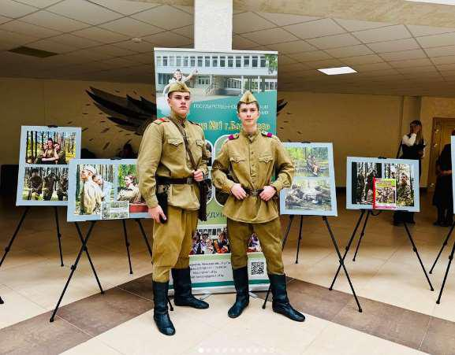
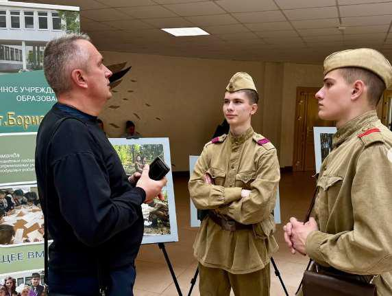
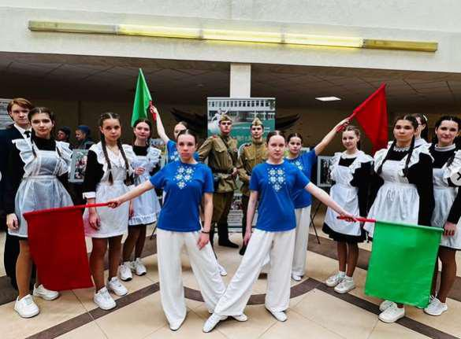
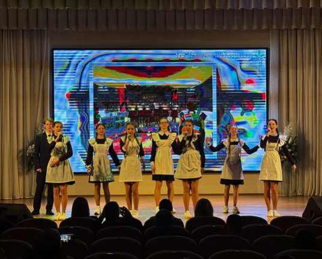
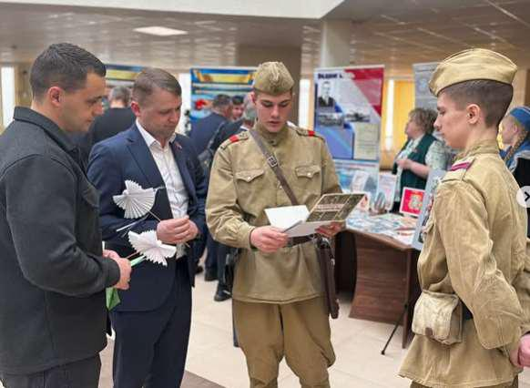

ГИМНАЗИЯ ПОДЕЛИЛАСЬ ОПЫТОМ НА ОБЛАСТНОМ СЕМИНАРЕ ПО ПАТРИОТИЧЕСКОМУ ВОСПИТАНИЮ
8 апреля на базе ГУО «Средняя школа №25 г. Борисова» состоялся областной методический семинар-практикум «Патриотическое воспитание в учреждении образования: лучшие практики военно-патриотических клубов». Мероприятие объединило педагогов, руководителей клубов и руководителей по ВПВ, работающих над сохранением исторической памяти и формированием гражданской позиции у подрастающего поколения.


В рамках презентации опыта учреждений образования Борисовского района тематическую площадку представила и наша гимназия. Гости и участники семинара познакомились с проектом «Сквозь года звенит Победа!», направленным на глубокое и эмоциональное погружение учащихся в историю Великой Отечественной войны.

В рамках проекта активисты гимназического самоуправления провели фотореконструкцию, где воссоздали сцены из фронтового быта. Снимки не остались лишь в цифровом виде: они легли в основу авторской серии патриотических открыток, приуроченных к знаменательной дате – 80-летию Победы.

В методическом практикуме гимназисты продемонстрировали тематическую агитбригаду. Яркое, эмоционально насыщенное выступление прошло под главным лозунгом: «Сегодня молодёжь определяет БУДУЩЕЕ нашей страны! Мы – белорусы – и это звучит гордо!» Участники агитбригады наглядно показали, как современные школьники бережно хранят историческое наследие и готовы активно включаться в общественно полезную деятельность.
